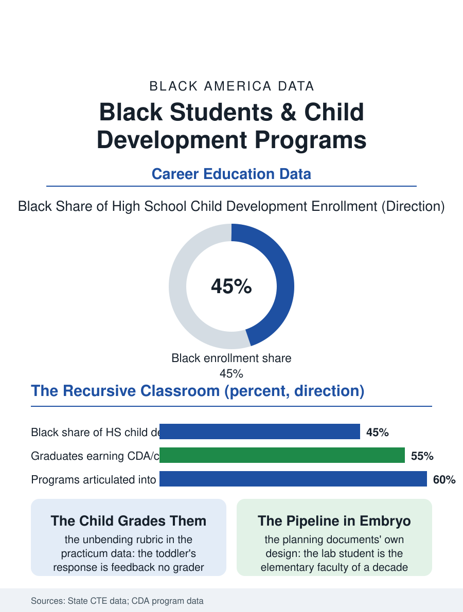

Black Education
The Pipeline in Embryo: Black Students and Child Development
High schoolers teaching toddlers in the lab preschool, the teacher pipeline's first link and its most honest mirror. The child development file.

The early childhood education program is the CTE file's most recursive: high school students learning the teaching of small children in the lab preschool inside their own school, on the ladder whose bottom rung, the child care workforce, is the economy's most Black and least paid, and whose top is the classroom of the grow-your-own file. This article reads the child development program file.
The Lab Preschool
The model's form is the teaching hospital's translated to the nursery: the lab school enrolls the neighborhood's toddlers, the high school students rotate through its rooms under the master teacher, and the practicum's feedback is the child's own, as unbending a rubric as the welding coupon in its way. The credential at the program's end is the Child Development Associate's school-age form or its articulated college credits, the child care file's floor credential earned at seventeen, converting the graduate into the center's hireable assistant on the day of the diploma in the pattern of the health academy's stack. The enrollment is the file's mirror of the cosmetology lab's, heavily female and, in the urban districts, heavily Black, read by the tracking critics and the workforce's defenders in their established positions, with the wage file awaiting the graduate being the argument's uncomfortable exhibit for both. The observation file is the program's scholarly core, the students trained to record the child's development against the milestones with the clinician's neutrality, a discipline of seeing that the master teachers describe as the profession's foundation and the high school's most transferable rigor, practiced on the small subjects who consent by delight. The ratios in the lab school are the program's standing lesson in the workforce file's arithmetic, the students experiencing in their own afternoons the exact staffing mathematics whose funding decides the profession they are entering, a civics of care taught by the schedule itself.
The Pipeline's First Link
The program's designed purpose in the strong districts is explicitly the teacher pipeline's: the education pathway's first link, articulated into the community college's early childhood degree and the grow-your-own's paraprofessional ranks, so that the teenager in the lab preschool is, in the district's own planning documents, the elementary faculty of a decade hence in embryo, a design whose honesty requires the file to add that the chain's every link leaks in the pattern of the credential files and the wage at the chain's working end is the leak's chief cause. The male enrollment is the file's small deliberate frontier, the programs recruiting the young men for the early years' classrooms against the culture's assignment, with the male teacher file's data as their brief. The family file of the lab school, the parents who choose the high school's nursery for their toddlers, is the program's community audit conducted daily at the small door.
Small Children, Serious School
The child development file closes on the lab school's place in the building, because the preschool inside the high school is the institution's gentlest room and its most serious argument, the toddlers' presence teaching the whole school a register its other corridors do not hold, and the students who staff it carrying a responsibility the building can see them honored for daily. The credential counts rise in the states that fund the articulation. The file's last entry is the morning's arrival at the lab school's small door, the toddler's hand passed from the parent's to the student's in the sight of the master teacher, the pipeline's first link and its whole purpose exchanged in one handoff, at the hour the rest of the school is still waking. The schedule's lesson is not lost on the students, several of whom cite it, in the program's own surveys, as the moment the profession became a policy in their minds rather than only a calling in their hearts. That conversion, from calling to policy and back to calling again at a higher level of sight, is the program's graduates' distinguishing mark in the workforce's interviews, where the young assistant who can speak of ratios and of wonder in the same answer is remembered when the hiring is done. The file records it without further ornament, the fact being sufficient.
More in Black Education
Black Educational Attainment: High School Parity, the College Gap
About 89 percent of Black adults hold a high school diploma and one in four holds a bachelor's degree or higher — the attainment ladder, the college completion gap, and the generational trend.
Historically Black Colleges and Universities: Enrollment and Degrees
More than 100 HBCUs enroll roughly 290,000 students and award about one in six Black bachelor's degrees — an outsized share from a small sector. The federal education data.
Black College Enrollment: 2.4 Million Students
About 2.4 million Black students are enrolled in American colleges — nearly two-thirds of them women. The NCES enrollment data by sector, level, and trend.
Source: State career and technical education data; Council for Professional Recognition Child Development Associate program data.